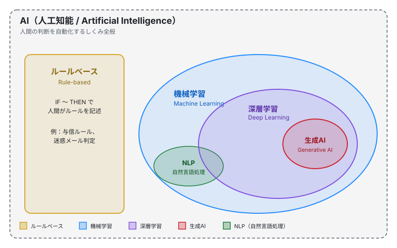

第1章 AIの全体像
この章の要点
- AIは大きな傘で、その中にルールベースと機械学習が並ぶ。機械学習の中に深層学習があり、生成AIはその一部
- 「AI＝ChatGPT」ではない。判断を自動化する仕組みすべてがAI
- 手法ごとに向き不向きがある。データ量・説明性・コスト・用途で選ぶ
まず地図を描く
AI（Artificial Intelligence）という言葉は、いまや生成AIと同義に使われることが多い。だが本来のAIはもっと広い概念です。判断を自動化する仕組みは、入り組んだルール集も、画像認識も、ChatGPTのような生成モデルも、ぜんぶAIの一部として整理できます。
クライアントと話すとき、この地図が頭に入っていると話が噛み合いやすくなります。「うちは生成AIを使いたい」と言われたとき、本当に必要なのが分類モデルだった、ということもあります。

この図のポイントは三つです。
- ルールベースもAIである。機械学習の外、AIの傘の中に置かれる
- 機械学習は深層学習を含み、深層学習の一部が生成AI。生成AIは深層学習の応用形
- NLP（自然言語処理）は領域名。手法ではなく「言語を扱う問題」のラベルで、機械学習の中の一区画として描かれる
補足：生成AIと機械学習の関係
生成AIは、深層学習で作られた巨大な大規模言語モデル（LLM）を中心に成り立っています。LLMは機械学習の手法で訓練されたモデルなので、生成AIは広義の機械学習に含まれる、と整理できます。
4つの分類を一枚で比較する
それぞれの手法を、現場で選ぶときに効く観点だけに絞って並べます。
| 手法 | 必要なデータ量 | 説明性 | コスト | 向く用途 |
|---|---|---|---|---|
| ルールベース | 不要 | 高い | 低い | 法令・契約の判定、明確な条件分岐 |
| 機械学習 | 中〜多 | 中 | 中 | 需要予測、与信、レコメンド |
| 深層学習 | 非常に多い | 低い | 高い | 画像認識、音声認識、複雑な分類 |
| 生成AI | ※事前学習済みを利用 | 低い | 中（API利用時） | 文章生成、要約、対話、検索拡張 |
生成AIの「必要なデータ量」は特殊です。事前学習（pre-training）済みのモデルを借りる前提なので、利用側は学習データを用意しなくてよい。これは後の章で重要になります。
クライアントとの会話で使えるひと言
「AIといってもいくつか種類があって、目的によって向き不向きが分かれます」と切り出すと、漠然とした「AI導入したい」を具体化する糸口になります。とくに説明性が必要な業務（金融審査、医療、公的判断）では、深層学習よりルールベースや解釈しやすい機械学習が選ばれやすい、という現実を伝えると話が早い。
ルールベースもAIの一種
「AI＝機械学習」と思い込むと、現場の実態を見誤ります。実際の業務システムは、純粋な機械学習だけで動いていることは少なく、ルールベースの判定ロジックが大量に組み合わさっているのが普通です。
たとえば派遣業の案件マッチングシステムは、長年にわたって「この条件のときはこちらの案件を出す」というルールが積み上がっています。これも立派なAIです。第6章のケーススタディでは、この既存ルール群を捨てずに次世代手法の土台として再利用するアプローチを扱います。
「機械学習」と「深層学習」の境目
機械学習は、データから関係を学んでモデルを作る手法群の総称です。古典的な手法（線形回帰、決定木、ランダムフォレスト など）と、ニューラルネットワークを多層に重ねた深層学習（Deep Learning）に分かれます。
深層学習は機械学習の中の一カテゴリです。違いをひと言でいえば「学習に必要なデータ量とマシンパワーが桁違いに多い代わりに、画像や言語のように複雑な入力を扱える」ことです。
生成AIの位置づけ
生成AI（Generative AI）は、深層学習の応用形のひとつです。なかでも、文章を生成するLLMが現在の主役です。
生成AIは「深層学習で作られたモデル」を「事前学習済みの状態で借りて使う」のが基本です。自社で巨大モデルをゼロから学習させるケースは稀で、APIや既存モデルを活用するのが現実的です。
⚠ よくある混同
「生成AIで予測モデルを作ってほしい」という依頼は、しばしば生成AI以外の機械学習を指しています。需要予測や離反予測のような数値タスクは、生成AIではなく古典的な機械学習や深層学習で扱うのが定石です。要件の翻訳が、新人にとって最初の関門になります。
NLP（自然言語処理）はどこに入るか
NLP（自然言語処理 / Natural Language Processing）は手法名ではなく、扱う対象（＝言葉）でくくった領域名です。NLPの中では古典的な機械学習、深層学習、生成AI、いずれも使われます。
第5章ではNLPの中核技術である埋め込み（embedding）を扱います。これは第6章のケーススタディの土台になる重要技術です。
新人がまず押さえるべき3点
- 地図を持つ。AIの中にルールベースと機械学習があり、機械学習の中に深層学習、その一部が生成AI。NLPは領域名
- 「AI＝生成AI」ではない。依頼内容を翻訳できると提案の幅が広がる
- 手法選びは「データ量・説明性・コスト・用途」の4軸。万能の手法はない
もっと知りたい人へ
- 総務省 / 情報通信白書 — AIの歴史と日本のAI政策の全体像。各年版でAIの動向が更新される
- 日本ディープラーニング協会（JDLA） / G検定 — 体系的にAIを学ぶ入口。シラバスは無料で公開されており、章立てが本書の地図と同じ構造になっている
- Google / Machine Learning Crash Course — 機械学習の基礎を演習込みで学べる無料コース